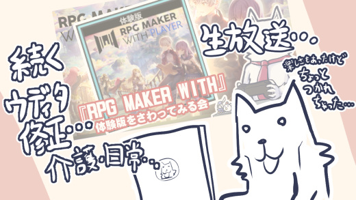

■2024-04-27 (土) 続ウディタ修正＆ツクール配信＆片道勇者2再開▼
生活が大変だったり、気晴らしに
新作RPGツクール（RPG MAKER WITH）の生放送をしたり、
そのすき間に『片道勇者2』の開発をちょっと進めたりする感じの
色々あった二週間でした！
今回起きたイベントを以下に列挙していきます！

◆ウディタ コードの組み方次第で古いPCで動かなくなる問題
ウディタの最新版の問題が一通り解決したかなあと思ったら
また新たな難題が発生してしまいました！
というのも、
『プログラムのコードの組み方によっては新しめのCPU専用の命令が
使われるようになってしまい、古いPCでは動かなくなる』
という問題が起きてしまったのです！
私も長年プログラムしててこういう問題があるのを全然知らず、
ちょっとした衝撃を受けてしまいました。
前回「うひょーがんばっていじってたら速度28倍になったー！」という部分
がまさに新しめのCPU命令で処理するよう最適化されてしまった場所の一つっぽくて、
2011年以前などのCPUが古いPCの場合は、その処理を回避するようにしないと
エラーが起きることが判明！
ということで、それを発見するために何日も使って何かできないかと奮闘しておりました。
【ウディタ】
— SmokingWOLF@片道勇者2開発中/ゲーム開発者 (@WO_LF) April 18, 2024
『最新の暗号化を使ったときだけ2011年以前のPCで起動しない』という謎めいたご報告をいただいて調査してましたが、検証の結果、
『コードの組み方によっては(勝手に特殊な最適化が働いて)昔のCPUでだけ動かなくなることがある』
ということを今日知りました。
プログラミングヤバい。 pic.twitter.com/c3K0JAxJtl
↑ CPUの拡張命令の「AVX」の有無で動作が変化していました。
ってよく見たら「メモリ違反のアクセス違反」って言ってるところが！
「メモリのアクセス違反」の誤記です。
結果として、今回は仮想環境でCPUの機能をオンオフしながら検証するなんて
初めての経験ができてとても勉強になりました。
これでいくらか古い環境のテストもできそうです。
ただ、「仮想環境上」ではこのCPU差の問題への対策ができたのですが、
情報をいただいたご報告者さまのPCでは問題が解決しませんでした、残念です。
詳細は掴みきれませんでしたが、他の方でも
同じ時代のCPUで問題が起きるかもしれません。
とはいえ、ひとまず問題が起きる環境はだいぶ昔のPCだけらしいので、
今回は「最新の暗号化を使うと2011年ごろ以前のPCで起動できなくなる可能性があるから気をつけてくれよな！」という警告を
次バージョンからEditor内に入れることで対応しようと考えています。
さらに時間が経てば2011年ごろのPCも徐々になくなっていって、
問題発生頻度はゼロに近付いていくでしょう。
【古いPCでも動かしたい場合は？】
もしゲーム開発者さま側で古いPCでも
動作可能にしたい場合は「Ver3.14～暗号化」という、
1つ前の暗号化を使用することで今回の問題を起きなくすることができます。
（問題が起きる最新版暗号化は「Ver3.31~暗号化」以降のみ）
ウディタはいちおうWindows7（2009年発売）以降で動作するようになっているので、
微妙に今回の「2011年以前のCPUで起動できない」という
条件に引っかかる可能性があります。
どこまで昔のPCをサポートすればいいのかは悩みどころですが、
基本的には「10年以内の環境はなるべく全部動くようがんばる」
「それ以上は時と場合によりけり」という感じでやっていこうと思っています。
RPG MAKER WITH体験版のプレイ配信をしました！
『【ツクール】ウディタ作者がRPG MAKER WITH PLAYER + 体験版を遊ぶよ』
というちょっぴり挑発的なタイトルで生放送させていただきました！
でも中味は全然挑発的じゃなくて
「うひょーこの機能が欲しかったんですよ！ 夢が広がるー！」
とか言ってばっかりでした。家庭用ゲームのRPGツクールの記憶が
『RPGツクール3』で止まってた私にはまぶしすぎるツクールでしたね！
出た話題としては、
「ウディタの修正が忙しくて体験版遊べてなかったんですよ！」「家庭用版のいいところはこれですよね、オンラインにアップした他人のデータをDLしやすい！」「一流って感じの曲ですね」「レイヤー4もある…負けた…！(ウディタは3レイヤー)」「デバッグログがある！？」「ルート設定ができる！ プレビューもある！ すごい！」「ピクチャ番号100まで使える！ RPGツクール2000マンにはうれしいですね(50枚までだったので)」「文章の表示で制御文字のリファレンス見られるのいいなー色番号の表示もいいですよねこれ」「\FS[50]こんぬちわ！！」「うおお選択肢が6択も使える！」「アイテム選択の処理！？ 通常アイテム1つ選ばせるとかできる！？」「ウフ～ン★」「おっ、乱数が作れる！ これだよこれ！」「おおおキャラクターのマップXYと画面XY取れるー！」「(条件分岐で)キー入力が取れる！ 音ゲー作れますよ！」「キャラの名前(の頭文字)がRPGMAKERみたいですね、いいですね(ウディタでも似た感じにしてるので共感)」「いやーほんとこれは家庭用RPGツクールで何でも作れそうな感じありますね」「正方形のピクチャ1枚あればなんでもできる！」「指定位置のイベントID取れるのえらい！」「利用規約に賠償請求可能な金額は1000円かソフト購入代金の高い方って記載がある！」「せんめつ！（※たぶん正しくは「じょうめつ」）」
みたいなことを言っておりました。気になる方は動画本編をどうぞ！
『片道勇者2』開発再開！
ずっとウディタの修正にかかりっきりでこちらが進められていませんでした！
『片道勇者2』、今はデータ面もまだまだなのですが、
ひとまず優先順の都合で現在はメインストーリーのところをざっくり作っています！
いつでも「完成」宣言ができる状態にしておくことは精神衛生上大事ですからね！
ですがいつものことながらストーリーのネタバレに配慮すると
ストーリー開発中は何も言えなくなって開発日誌のネタがなくなります！ 困った！
ちょっとしたアイテムやスキル紹介などでも期待度を高める役目を
果たしてくれると思うので、今後そのあたりも紹介できる部分がないか
常に考えながら作っていきたいと思います！
「途中の情報を面白くできずして最終成果をワクワクさせられようか！」
とも思いますしね！
その辺の断片情報からワクワクを生むセンスを磨くのにいい訓練にもなるかもしれません。
もちろん本編作成がおろそかにならない程度にですが！
という感じであっちこっち行ったり少し楽しみも確保しつつマイペースに進めております！
ここからしばらくは、ウディタのバグ修正しつつ
第16回ウディコンが始まるまでは
『片道勇者2』開発に集中していきたいです！
ウディコンの準備もがんばります！ 今年もお楽しみに！
2024-04-27 (土)  カテゴリ: ウディタ
カテゴリ: ウディタ
 カテゴリ: ウディタ
カテゴリ: ウディタ